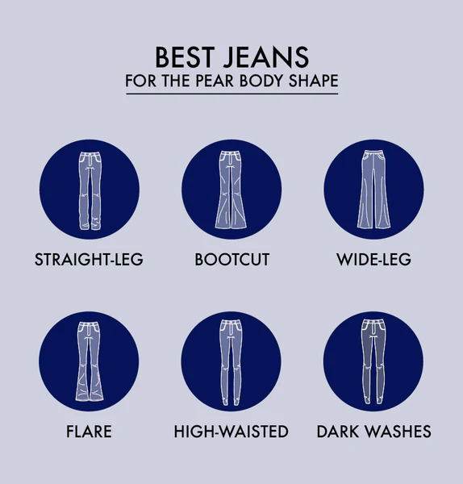
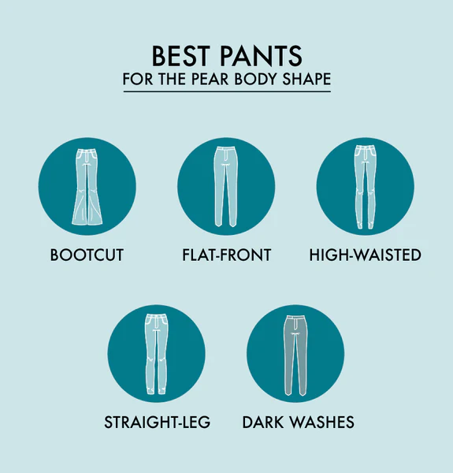
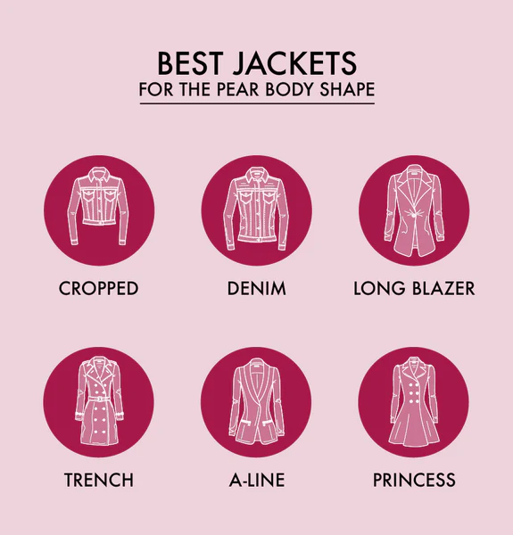
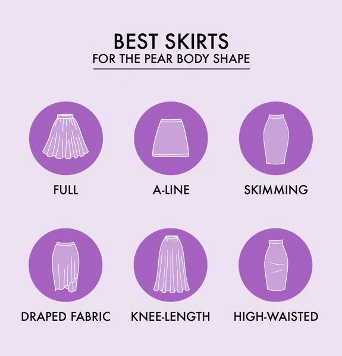
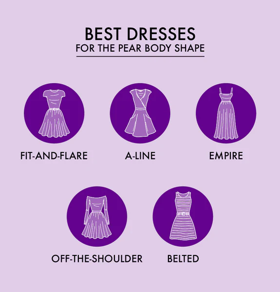
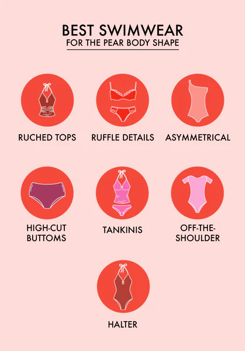

TOPS
When shopping for tops for a pear shape body, there are two golden rules to keep in mind:
1) accentuate your shoulders and bust and
2) cinch your waist. The most flattering tops and blouses for pears include:
| Top Types | Style Describes |
|---|---|
| Peplum | These adorable tops, sometimes called "baby doll" tops, feature a gathered waistline with a flair at the bottom. This style accentuates your natural waist beautifully. |
| Cowl Neck | Continuing to draw attention to your face and upper body, a cowl neck drapes nicely and adds visual interest. |
| Square Neck | Square neck tops show off your shoulder blades and sit low across your neck and shoulders. |
| Boat Neck | Similarly, a boat neck widens your shoulders to give the illusion of a more balanced shape. |
| Belted | Belted tops show off your already well-defined waist and help create balance. |
JEANS
When shopping for women's denim for a pear body shape, looser-fitting cuts and dark washes can help flatter your curvy figure.
| Jean Types | Style Describes |
|---|---|
| Straight-Leg | Skinny jeans draw attention down, but you can keep your bottom half neutral with straight-leg jeans. Love skinny jeans? Try a slim-straight option, which is roomier in the thighs than traditional skinny jeans. |
| Bootcut | Bootcut jeans are a pear’s best friend as the slight curve at the ankles balances out your hips, butt, and thighs. Try pairing for favorite bootcut jeans with a pair of chic booties to elongate your legs. |
| Wide-Leg | Wide-leg jeans, like straight-leg, will create a straighter silhouette, giving your hips, butt, and thighs a more uniform look. |
| Flare | Flares may seem like a no-no, but with the right top, flare jeans can showcase the balance in your figure and draw the eyes away from your hips, butt, and thighs. |
| High-Waisted | Triangle body shapes look terrific in high-waisted jeans that accentuate your natural waistline. |
| Dark Washes | When you want to downplay your bottom half, choose dark washes, like classic black or indigo, and pair with a bright, fun top or a playful accessory. |
PANTS
No pear’s wardrobe is complete without a few pairs of well-fitting dress and casual pants. Here are some great pants for your pear-shaped body.
| Pant Types | Style Describes |
|---|---|
| Bootcut | To draw attention to your upper body, choose bootcut pants rather than ultra-thin cuts. |
| Flat-Front | Opting for flat-front pants instead of pleated pants will sit well across your hips and thighs to create a balanced silhouette. |
| High-Waisted | Showcasing your natural waist to give you a balanced shape is accented with high-waisted trousers. |
| Straight Leg | You can also look great in a pair of straight-legged pants that create a neutral shape to elongate your legs. |
| Dark Colors | As with jeans, choose darker colors for your work wardrobe pants to bring the eye naturally up to your face, neckline, and shoulders. |
JACKETS
Accessorizing your look in the cooler seasons with jackets and coats can also give you a great shape.
| Jacket Types | Style Describes |
|---|---|
| Cropped | To accentuate your upper half, a cropped jacket is a perfect look over any outfit. |
| Denim or Bomberr | You can pull off some great looks with denim or bomber jackets. Keep the hem at your natural waist to accentuate your shape. |
| Long Blazer | For the office, choose a long blazer that falls below your hips to show off your shape and elongate your torso. |
| Trench Coat | For outerwear, a trench coat with a belt to cinch at your natural waist is the perfect fit. |
| A-Line Coat | Like choosing dresses, A-line coats are an excellent fit for the triangle body shape. |
| Princess Coat | This retro style of coat is named for the seams that run along each side of the bustline, and it's perfectly designed for a pear body shape. |
SKIRTS
Like dresses, you also want the best skirts for pear-shaped bodies in your wardrobe to show off your naturally curvy figure.
| Skirt Types | Style Describes |
|---|---|
| Full | Like the dress choices you make, pairing a full skirt with a fitted top will give you the right silhouette. |
| A-Line | An A-line skirt will also create the right shape as it flares away from your hips, balancing out your form. |
| Skimming | Choose skirts that skim your hips rather than tightly fitted skirts. |
| Draped Fabric | Loose, draping fabrics that won't cling to your hips or thighs will help accentuate your shape and draw attention upward. |
| Knee-Length or Mid-Calf | Choose skirts that fall to the knee or mid-calf to elongate your shape and legs. |
| High-Waisted | High-waisted skirts to accentuate your natural waistline will look fabulous with a fitted top. |
DRESS
For essential dresses for your pear shape body, consider these styles to help you accentuate your best features. Use these concepts to pick out a good jumpsuit, too.
| Dress Types | Style Describes |
|---|---|
| Fit and Flare | With a defined waist and full skirt, fit and flare dresses are perfect for the pear body shape. |
| A-Line | Like fit and flare, A-line dresses will also have a fuller skirt that lifts the fabric from the hips. |
| Empire Waist | You may also want to consider an empire waist dress that's gathered just below your bust, especially when choosing a long gown. |
| Off the Shoulder | Dresses with an off-the-shoulder design are a great way to accentuate your shoulders and collarbones to draw attention up. |
| Belted | Belts at your natural waist help give your body the illusion of a more balanced, hourglass shape. |
SWIMWEAR
Is the beach, lake, or pool calling your name? Choosing the right swimwear along with summer clothes for your pear-shaped body can make you feel confident when you’re ready to take a dip.
| Dress Types | Style Describes |
|---|---|
| Ruched Tops | The pleated, ruched detailing on the upper half of a swimsuit will draw the eye upward. |
| Ruffle Details | Choose ruffles along the neckline to create visual interest. |
| Asymmetrical | A one-shoulder top or an asymmetrical hemline to a swim dress looks great on a pear body shape. |
| High-Waisted Bottoms | When choosing separates, pick out high-waisted swim bottoms to show off your natural waist. |
| Tankinis | Tankinis with fit and flare tops, like peplum tops, will accentuate all your right curves. |
| Off-the-Shoulder | Drawing the eye up with an off-the-shoulder swimsuit design will show off your collarbones. |
| Halter | A halter top is another way to display your shoulders and create an elongated shape for your bustline. |
SHOES AND ACCESSORIES
Shoes and accessories can also help accentuate your fabulous pear body shape. Whether you're dressing casual, formal, or for the office, try out these options.

| Shoe and Accessor Types | Style Describes |
|---|---|
| Pointed-Toe Shoes | To elongate your legs, choose a pointed-toe shoe. They draw the length of the leg downward. |
| Booties | Booties, especially when paired with boot-cut jeans or slacks, are a great shoe choice. |
| Drop Earrings | You want to show off your neckline and shoulders, and drop earrings can help point the eye in the right direction. |
| Bold Necklace | Similarly, a bold necklace will also help draw attention to the neckline, shoulders, and bust area. |
| Belts | You have a great waistline, so show it off by cinching with a belt at your natural waist. |